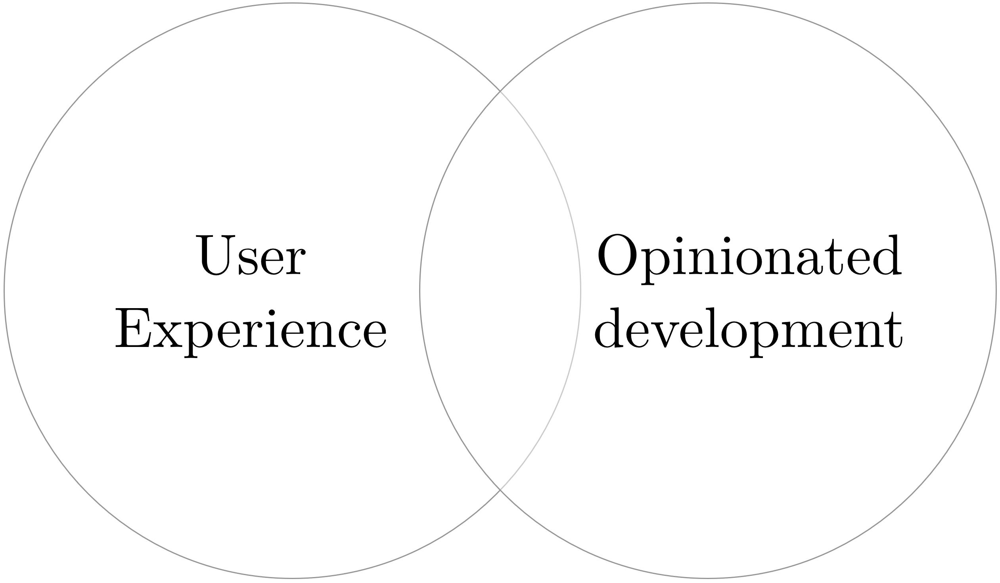
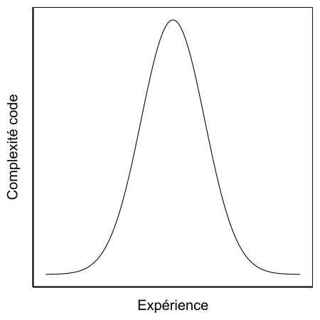
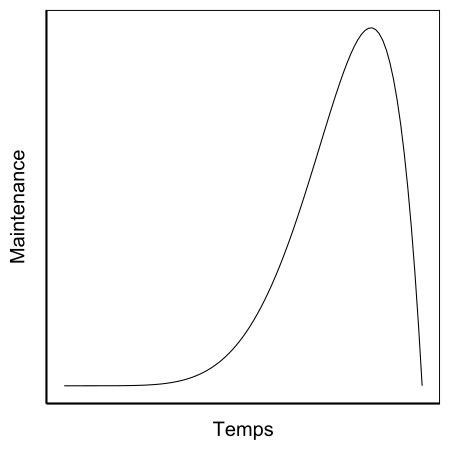
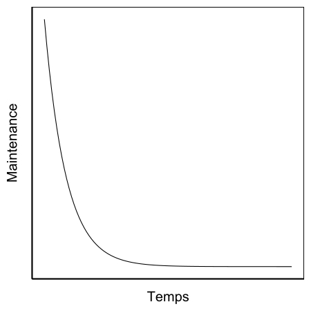
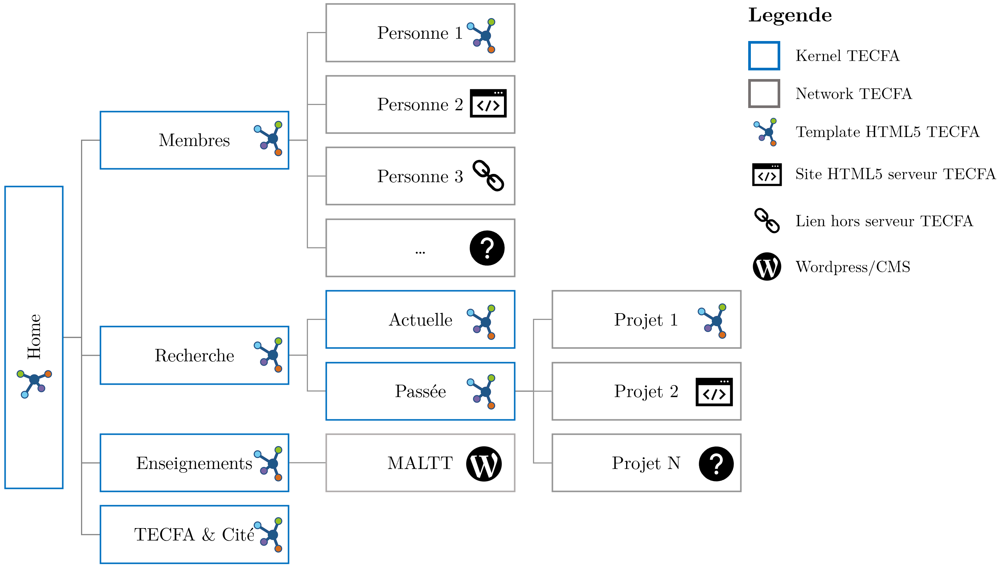

TECFA HTML5
Mattia A. Fritz
TECFA, Université de Genève
Plan du Workshop
-
HTML5 et TECFA
Une histoire d'indépendance et décentralisation du pouvoir -
Philosophie web du site TECFA
UX meets opinionated web development -
Potentiel techno-pédagogique d'HTML5
Quelques exemples d'applications simples -
Hands-on !
Éditeur de texte, logiciel SFTP, templates, ...
Première page web

TECFA est parmi les premières unités universitaires à adopter le web. Voir par exemple ce Beginner's guide to HTML publiée déjà en 1995.
Philosophie du web
Les trois composantes du web peuvent être vue dans une perspective philosophique :
-
Uniform Resource Locator (URL)
Maximiser les routes hypermédia et garantir la stabilité de la cartographie de l'information -
HyperText Transfer Protocole (HTTP)
Minimiser le contact entre le chercheur et le fournisseur de l'information -
HyperText Markup Language (HTML)
Fournir un langage universel machine-machine, personne-machine et personne-personne.
Décentraliser le pouvoir
Distribuer l'information est une manière de se protéger des monopoles, un thème très actuel.
— Adapté de Wikipedia
Processus de création du site
Travail mené par le groupe du site web en 2019/2020.
Approche centrée utilisateur
Perspective technique
Développement
 Ne pas sous-estimer l'entropie même de systèmes simples.Site avec CMS
 Fantastique au début, un cauchemar avant la refonte ou l'abandon.Site avec HTML5
 Une cauchemar au début, mais ensuite on peut l'oublier sans soucis.Site TECFA = kernel network
Potentiel techno-pédagogique
-
Articles scientifiques
Meilleur adaptation aux écrans, interactivité, abbreviations, ... -
Utiliser un site pour piloter un cours
Example du site du cours ERGO II, avec portfolio des étudiant-es. -
Hacker des
CMS comme Moodle
ou Wordpress
À l'acronyme WYSIWYG il faut souvent ajouter BINWIW ! -
Slides interactives
Combiner le support traditionnel avec des principaux multimédias. Voir par exemple certaines de mes slides. -
Matériel expérimental
Créer des contenus ad hoc selon besoins spécifiques. Voir par exemple le matériel de Julien Venni.
Hands-on !
Pour aller plus loin
Les concepts abordés dans cette présentation sont traités de manière plus exhaustive dans un article sur EduTechWiki.
EduTechWiki est un wiki sur la technologie éducative hébergé est maintenu par TECFA, une unité de l'Université de Genève, depuis 2006.